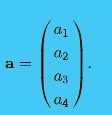
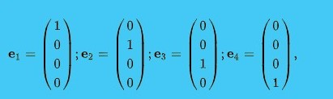
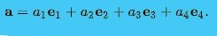
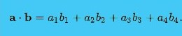
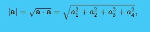
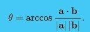
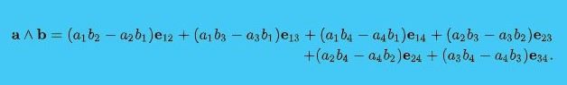

Mathematically, a four-dimensional space is a space with four spatial dimensions, that is a space that needs four parameters to specify a point in it. For example, a general point might have position vector a, equal to
This can be written in terms of the four standard basis vectors (e1, e2, e3, e4), given by
so the general vector a is
Vectors add, subtract and scale as in three dimensions.
The dot product of Euclidean three-dimensional space generalizes to four dimensions as
It can be used to calculate the norm or length of a vector
and calculate or define the angle between two non-zero vectors as
Minkowski spacetime is four-dimensional space with geometry defined by a non-degenerate pairing different from the dot product:
As an example, the distance squared between the points (0,0,0,0) and (1,1,1,0) is 3 in both the Euclidean and Minkowskian 4-spaces, while the distance squared between (0,0,0,0) and (1,1,1,1) is 4 in Euclidean space and 2 in Minkowski space; increasing b4 decreases the metric distance. This leads to many of the well-known apparent "paradoxes" of relativity.
The cross product is not defined in four dimensions. Instead, the exterior product is used for some applications, and is defined as follows:
This is bivector valued, with bivectors in four dimensions forming a six-dimensional linear space with basis (e12, e13, e14, e23, e24, e34). They can be used to generate rotations in four dimensions.